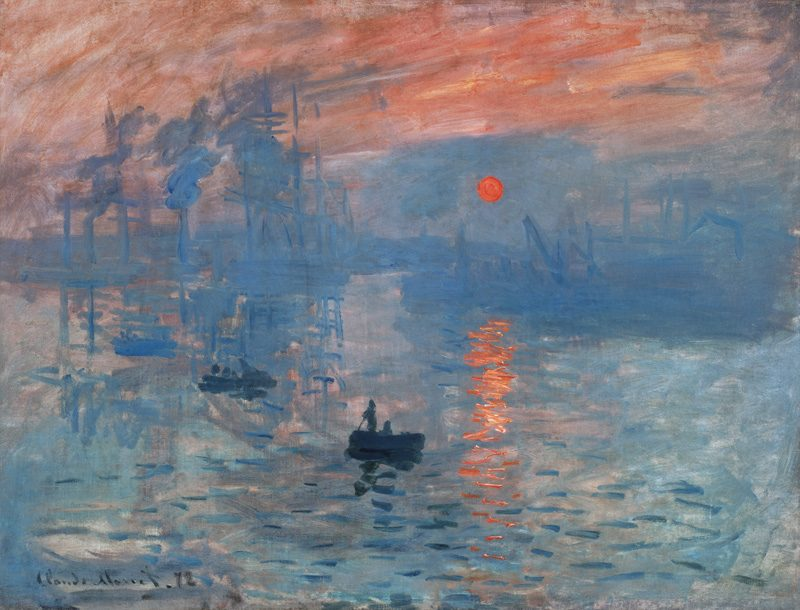
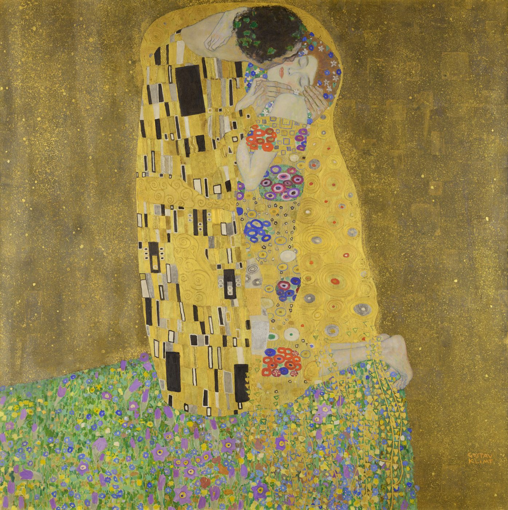
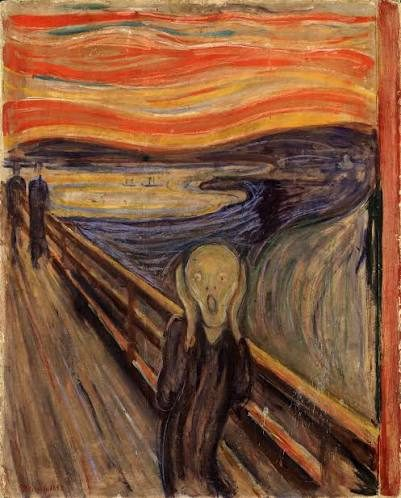
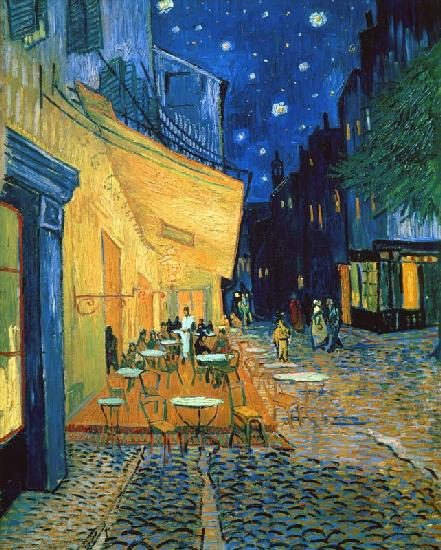

Cuatro formas
de mirar
01 — Artistas
Cargando artistas...
El arte no entra
en un solo marco
02 — Obras

01
Impresión, sol naciente
Claude Monet
1872 · Óleo sobre lienzo · Musée Marmottan Monet, París
El puerto de Le Havre al amanecer, apenas sugerido con manchas de color. Un crítico usó su título para burlarse de la exposición de 1874, y el nombre terminó bautizando al Impresionismo.

02
El beso
Gustav Klimt
1907–1908 · Óleo y pan de oro sobre lienzo · Belvedere, Viena
La obra central de su "período dorado". Dos figuras se funden en un mismo manto: formas rectangulares para él, círculos y flores para ella, sobre un fondo de oro.

03
El grito
Edvard Munch
1893 · Témpera y crayón sobre cartón · Nasjonalmuseet, Oslo
Nace de un paseo al atardecer en el que Munch sintió un grito atravesando la naturaleza. Hizo varias versiones del motivo; esta es la primera pintada y la más conocida.

04
Terraza de café por la noche
Vincent van Gogh
1888 · Óleo sobre lienzo · Museo Kröller-Müller, Otterlo
Pintada en Arles, al aire libre y de noche. Van Gogh contó que era un cuadro nocturno sin nada de negro: solo azules, violetas y verdes.

03 — Sobre el proyecto
Mirar más allá
Fuera de Marco es un archivo digital que invita a mirar el arte de otra manera.
Monet, Klimt, Munch y Van Gogh transformaron la pintura a través del color, la luz, las formas y las emociones. Cada uno encontró su propio lenguaje, y cada obra propone algo más que una imagen: una forma distinta de percibir el mundo.
Porque una obra no termina en su marco: sigue en quien la mira.